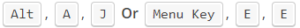

Развернуть и свернуть все поля сводной таблицы — макрос VBA
Автор Дмитрий Якушев На чтение7 мин. Просмотров383
Итог: узнаете, как добавить кнопки в ваши сводные таблицы и сводные диаграммы, чтобы быстро развернуть / свернуть целые поля с помощью макроса VBA.
Уровень мастерства: Средний
Содержание
Развертывание и свертывание полей занимает много времени
Развертывание и свертывание полей в сводной таблице может быть многоэтапным процессом, который занимает много времени. Это особенно верно для пользователей/потребителей ваших файлов отчетов Excel, которые не знакомы с процессом.
Чтобы развернуть или свернуть поле «ВСЕ», мы обычно нажимаем маленькие кнопки «развернуть» (+) и свернуть (-) для каждого элемента в поле.
Для этого есть ярлыки в контекстном меню и на вкладке «Параметры / Анализ» на ленте.
Мы также можем нажать кнопки «Развернуть поле» и «Свернуть поле» на вкладке «Анализ / параметры» на ленте. Ячейка в области строк или столбцов сводной таблицы должна быть выбрана для того, чтобы эти кнопки работали.
Сочетания клавиш для операций Развернуть/Свернуть:
Развернуть все поле: 
Свернуть все поле:
Примечание. Для работы сочетаний клавиш должна быть выбрана ячейка в области «Строки или столбцы».
Однако в сводной таблице нет специальных кнопок, чтобы развернуть / свернуть все поле.
Новые кнопки «Развернуть» в сводных диаграммах Excel 2016
В Excel 2016 была добавлена новая функция в сводные диаграммы, которая позволяет нам разворачивать или сворачивать поля в области строк. Вы увидите маленькие кнопки плюс и минус в правом нижнем углу своей сводной диаграммы.
Однако эта функция доступна ТОЛЬКО в Excel 2016 (Office 365).
Итак, я создал несколько макросов, которые будут работать в любой версии Excel, как в области строк, так и в столбцах сводной таблицы или сводной диаграммы.
Мы также можем изменить сводную диаграмму, чтобы она отображала кнопки «Развернуть / Свернуть» и добавить их над сводной таблицей. Вот анимация, которая показывает, как это сделать.
Шаги для изменения сводной диаграммы:
Измените размер диаграммы, чтобы отображались только кнопки «Развернуть / Свернуть».
График будет скрыт за кнопками. Таким образом, мы просто используем сводную диаграмму для кнопок развернуть / свернуть. Важно отметить, что это будет работать только для полей в области строк сводной таблицы и только в Excel 2016 (Office 365).
Этот набор макросов развернет или свернет СЛЕДУЮЩЕЕ поле в области строк или столбцов. Это позволяет детализировать поля в строке или области столбцов.
Хорошим примером является случай, когда в сводной таблице есть поля в области строк для года, квартала, месяца, дня. Возможно, мы захотим сравнить итоги за год, а затем перейти к детализации по кварталам или месяцам.
Если сводная таблица в настоящее время свернута по годам, макрос «Expand_Entire_RowField» развернет ВСЕ элементы года, чтобы отобразить кварталы для каждого года.
Запуск макроса «Collapse_Entire_RowField» приведет к сворачиванию элементов Year обратно.
Вы можете скачать файл, содержащий макросы ниже.
Expand Collapse Entire Fields Macro.xlsm (68.3 KB)
Назначить макросы фигурам или кнопкам
Мы можем назначить эти макросы для фигур или кнопок на листе.
Кнопки можно непрерывно нажимать, чтобы проходить вверх или вниз по полям. Это позволяет пользователям ваших отчетов быстро расширять или сворачивать целые поля.
Формы можно вставлять в сводную диаграмму, чтобы имитировать функциональность кнопок развертывания / свертывания в Excel 2016.
Существует четыре различных макроса для развертывания/свертывания в областях строк и столбцов. Макросы используют For Next Loops, чтобы сделать довольно агрессивный цикл по полям и элементам сводки.
Макрос Expand находит поле в наивысшей позиции, которое свернуто, проверяя свойство ShowDetail каждого PivotItem. Если он НЕ находит расширенный элемент, он расширяет все поле. Если все элементы развернуты, то он переходит к полю в следующей позиции вниз.
|
2 3 4 5 6 7 8 9 10 11 12 13 14 15 16 17 18 19 20 21 22 23 24 25 26 27 28 29 30 31 32 33 34 35 36 37 38 39 40 |
Sub Expand_Entire_RowField() ' Разверните поле самой низкой позиции в области строк ' который в настоящее время расширен (показаны детали)
Dim pt As PivotTable Dim pf As PivotField Dim pi As PivotItem Dim iFieldCount As Long Dim iPosition As Long
' Создать ссылку на 1-ю сводную таблицу на листе ' Может быть изменен для ссылки на конкретный лист или сводную таблицу. Set pt = ActiveSheet.PivotTables(1)
' Количество полей в области строк минус 1 (последнее поле не может быть расширено) iFieldCount = pt.RowFields.Count - 1
' Цикл по положению поля For iPosition = 1 To iFieldCount ' Петлевые поля в области Rows For Each pf In pt.RowFields ' Если позиция соответствует первой переменной цикла, то If pf.Position = iPosition Then ' Зациклить каждый элемент поворота For Each pi In pf.PivotItems ' Если основной элемент свернут, то If pi.ShowDetail = False Then ' Развернуть все поле pf.ShowDetail = True ' Выйти из макроса Exit Sub End If Next pi End If Next pf ' Если линия Exit Sub не нажата, то ' цикл продолжится до следующей позиции поля Next iPosition
End Sub |
Макрос Collapse делает противоположное. Он начинается с самой нижней позиции поля и работает в обратном направлении, пока не найдет опорный элемент, который НЕ свернут. Если он найдет развернутый элемент, он свернет все поле. В противном случае он перемещается вверх в поле в следующей позиции в области строк и повторяет процесс.
|
2 3 4 5 6 7 8 9 10 11 12 13 14 15 16 17 18 19 20 21 22 23 24 25 26 27 28 29 30 31 32 33 34 35 36 37 38 39 40 |
Sub Collapse_Entire_RowField() ' Свернуть поле самой низкой позиции в области строк ' который в настоящее время расширен (показывая детали)
Dim pt As PivotTable Dim pf As PivotField Dim pi As PivotItem Dim iFieldCount As Long Dim iPosition As Long
' Создать ссылку на первую сводную таблицу на листе ' Может быть изменен для ссылки на конкретный лист или сводную таблицу. Set pt = ActiveSheet.PivotTables(1)
' Количество полей в области строк минус 1 (последнее поле не может быть расширено) iFieldCount = pt.RowFields.Count - 1
' Цикл назад по положению поля (шаг -1) For iPosition = iFieldCount To 1 Step -1 ' Цикл полей в области строк For Each pf In pt.RowFields ' Если позиция соответствует первой переменной цикла, то If pf.Position = iPosition Then ' Зациклить каждый элемент поворота For Each pi In pf.PivotItems ' Если элемент разворачивается, то If pi.ShowDetail = True Then ' Свернуть все поле pf.ShowDetail = False ' Выход из макроса Exit Sub End If Next pi End If Next pf ' Если линия Exit Sub не нажата, то ' Цикл продолжится до следующей позиции поля Next iPosition
End Sub |
Вы можете скачать файл, содержащий макросы для областей строк и столбцов.
Expand Collapse Entire Fields Macro.xlsm (68.3 KB)
Кнопки «Развернуть/свернуть макрос» должны стать хорошим дополнением к любому файлу отчета, который вы отправляете пользователям, не являющимся ниндзя Excel. Я видел, как многие пользователи неоднократно нажимали маленькие кнопки разворачивания/свертывания для каждого элемента сводки просто потому, что не знали, что есть лучший способ. Этот макрос должен помочь им ускорить и упростить детализацию сводных таблиц или диаграмм.
Пожалуйста, оставьте комментарий ниже с вопросами или предложениями о том, как мы можем улучшить это. Спасибо! 🙂